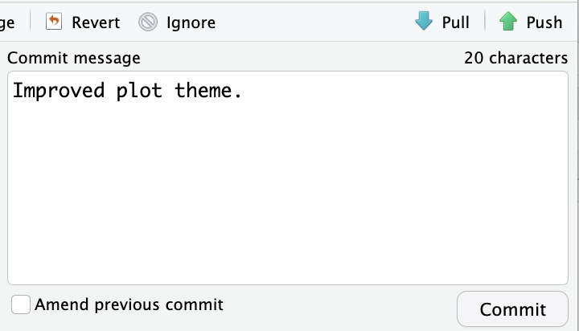
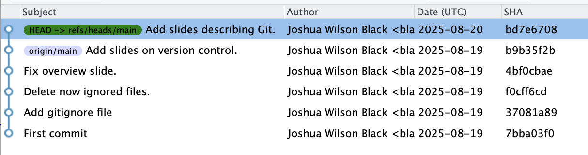
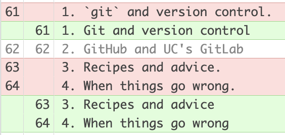
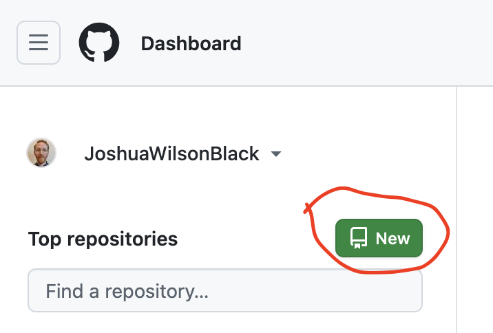
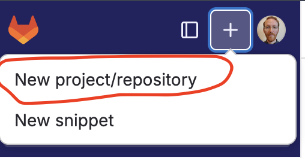

Foundations
Session 4: Git, GitHub, and GitLab
Joshua Wilson Black ![]()
Te Kāhui Roro Reo | New Zealand Institute of Language, Brain and Behaviour
Te Whare Wānanga o Waitaha | University of Canterbury
Overview
Overview
- Git and version control
- GitHub and UC’s GitLab
- Recipes and advice
- When things go wrong
Slides: nzilbb.github.io/ws-git/slides
Git and version control
Version control
- Software comes in versions
- Developers need to know how versions relate to each other
- Version control systems are the solution
- We have similar problems…
Why use version control?
- “Your paper relies on whatsit scores for every dongle, but I think you must have made an error. How did you calculate them?”
- “…uh, they must be on this old hard drive somewhere… wait… perhaps my RA did it?…”
- “We’ve switched to _sparkly-shiny-new) models this week, but they seem similar to the old-reliable-friendly models we fit a few months ago. How do the results of the two approaches differ?”
- “…uh, we replaced them…”
- “Why is your Markdown file longer than War and Peace?
- “…I want to keep all the previous approaches here so I can get access to them quickly”
- Let’s be professional!
Git
- Git is a widely used version control system.
- It allows you to track versions and see differences between them
- …along with dividing projects into into ‘branches’, merging distinct branches together, etc etc.
- It is distributed in the sense that the same project can be on multiple computers.
- More controlled than, e.g., just putting your project on dropbox.
- BTW: you should at least do that.
Git (cont.)
- If used well, say goodbye to
_Final_JWBcomments_v2_postR&R_reallyfinal.docx - But there’s a learning curve…
Git vocab
It’s best to learn by doing, but…
- Repo/Repository: Directory managed by Git.
- Commit: A snapshot of the repository.
- Diff: The difference between two commits.
- Remote: A version of the repository hosted online.
- Pull: To get any changes from a remote repository and merge them with your copy of the repository.
- Push: To upload your commits to a remote repository.

- Nothing is tracked by Git until it is “committed”
- i.e., saving a document does not commit it.


GitHub and UC GitLab
GitHub
- GitHub and Git are two different things
- GitHub hosts Git repositories
- Owned by Microsoft
- Widely used to share projects publically.
- But you can have private git repositories.
- GitHub Pages allows us to host nice-looking supplementary materials.
UC GitLab
- GitLab is another service for hosting Git repositories
- GitLab.com is very similar to GitHub
- But: UC hosts its own version of GitLab locally.
- Good for collaborating locally.
- https://eng-git.canterbury.ac.nz/
Big data and models
- GitHub and GitLab are not for storing large files
- Git will ignore all files listen in the
.gitignorefile - I usually share large files or models using OSF.io
- The limit: 100MB
- If one of you figures out “Git Large File Storage”, let me know…
Risks
- The whole point of Git is version control
- If you share a repository publically, you are sharing its entire history
- Private data has been accidentally leaked this way!
Recipes and advice
The source
My first port of call:
Also see:
GitHub first
- Create a repository on GitHub.

File -> New Project -> Version Control- Paste in the link.
Or, GitLab first…

Advice
- Always have a
README.mdfile.- This is the front page of your repository on GitHub
- Good: Frequent small commits.
- Good: When collaborating, frequent pushing and pulling.
- Extension: “branches” can be useful for collaboration.
When things go wrong
Merge problems
- You and I have both made changes to the repository. How do we merge them together?
- First pusher wins (push often!).
- Second person must pull before they can push.
- If no overlapping changes, there’s no problem.
- You probably won’t be so lucky… (I’ll show you an example later…)
- Sometimes a local repository becomes very hard to sync with the remote.
- The nuclear option:
- Rename your local repository.
- Clone a new copy from GitHub
- Make necessary changes (perhaps copying across parts of the old local repository)
- More
What now?
What now?
Many options! Some ideas:
- Clone a repository from the NZILBB GitHub inside RStudio.
- Make your own new repository on GitHub and use the link to make a new RStudio project.
- Make changes to a respository, commit and push.
- Add someone else to your GitHub repository and try to work together.
References
Allaire, JJ, Yihui Xie, Christophe Dervieux, Jonathan McPherson, Javier Luraschi, Kevin Ushey, Aron Atkins, et al. 2024. rmarkdown: Dynamic Documents for r. https://github.com/rstudio/rmarkdown.
Müller, Kirill. 2020. here: A Simpler Way to Find Your Files. https://doi.org/10.32614/CRAN.package.here.
R Core Team. 2025. R: A Language and Environment for Statistical Computing. Vienna, Austria: R Foundation for Statistical Computing. https://www.R-project.org/.
Wickham, Hadley, Mara Averick, Jennifer Bryan, Winston Chang, Lucy D’Agostino McGowan, Romain François, Garrett Grolemund, et al. 2019. “Welcome to the tidyverse.” Journal of Open Source Software 4 (43): 1686. https://doi.org/10.21105/joss.01686.
Xie, Yihui, J. J. Allaire, and Garrett Grolemund. 2018. R Markdown: The Definitive Guide. Boca Raton, Florida: Chapman; Hall/CRC. https://bookdown.org/yihui/rmarkdown.
Xie, Yihui, Christophe Dervieux, and Emily Riederer. 2020. R Markdown Cookbook. Boca Raton, Florida: Chapman; Hall/CRC. https://bookdown.org/yihui/rmarkdown-cookbook.